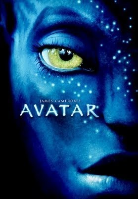

Avatar è un film del 2009 ideato, scritto, diretto, co-prodotto e co-montato da James Cameron.
È un colossal di fantascienza, che vede nel cast principale Sam Worthington, Zoe Saldana, Stephen Lang, Michelle Rodriguez, Giovanni Ribisi, Joel David Moore, CCH Pounder,
Wes Studi, Laz Alonso e Sigourney Weaver. Realizzato totalmente in tre dimensioni, ha visto un'ampia diffusione in 3D e in 3D IMAX, venendo comunque distribuito
anche nel classico formato 2D.
Il film ha stabilito diversi record di incassi, diventando anche il film con più incassi nella storia del cinema; è stato superato nel 2019 da Avengers: Endgame,
ma è tornato al primo posto in classifica, grazie al mercato cinese, nel marzo 2021. Si è aggiudicato svariati premi cinematografici, tra cui tre premi Oscar 2010:
miglior fotografia, miglior scenografia e migliori effetti speciali.

trama
Nel 2154 una compagnia interplanetaria terrestre, la RDA, è da alcuni anni all'opera su Pandora: un mondo primordiale, ricoperto da foreste pluviali, le cui flora e fauna sono di dimensioni superiori rispetto a quelle terrestri; tra le specie del pianeta, ve n'è una di umanoidi chiamati Na'vi. Essendo l'atmosfera tossica per gli umani, sono stati sviluppati gli avatar, cioè ibridi creati in laboratorio con geni umani e geni Na'vi; ogni avatar può essere utilizzato e controllato solo dall'essere umano il cui DNA è stato impiegato per comporlo. Il collegamento viene effettuato grazie a una speciale capsula tecnologica, dove il soggetto trasferisce coscienza e anima nell'avatar.
La RDA è interessata ai ricchi giacimenti di unobtainium, un cristallo ferroso che sarebbe la risposta ai gravi problemi energetici della Terra. Un abbondante giacimento è situato sotto l'insediamento del clan Na'vi degli Omaticaya, l'Albero Casa, che la RDA ha tentato di far allontanare attivando il programma avatar, guidato dalla dottoressa Grace Augustine, che è riuscita a insegnare la lingua umana ai Na'vi e ad apprendere la loro cultura, ma i rapporti si sono guastati dopo alcuni incidenti e la via diplomatica viene criticata dal dirigente Parker Selfridge e dal colonnello Miles Quaritch. Intanto, approda su Pandora Jake Sully, un ex-marine invalido che ha accettato di rimpiazzare il fratello gemello Tommy, uno scienziato a lungo addestratosi per pilotare un avatar ma che, poco prima di partire, è stato ucciso. Jake, lautamente pagato per sostituire Tommy, accetta l'offerta del colonnello Quaritch: in cambio di informazioni utili per un attacco militare, potrà sottoporsi a una costosa operazione chirurgica sulla Terra e riavere l'uso delle gambe.
Jake impara velocemente a controllare il proprio avatar e viene aggregato a una spedizione nella foresta con Grace, lo scienziato Norm Spellman e l'elicotterista Trudy Chacón. Il gruppo si imbatte in un Thanator, un feroce animale predatore, che attacca Jake, che si salva tuffandosi in un fiume, ma non riesce a ritrovare gli altri. Rimasto solo nella notte, Jake rischia di soccombere a un branco di Lupivipera, quando lo salva una guerriera Na'vi che lo stava spiando: è la principessa Neytiri degli Omaticaya, la quale si rivela capace di parlare la lingua umana, e dopo un "segno di Eywa", la divinità panica venerata dagli indigeni, conduce Jake all'Albero Casa. Qui Jake dichiara al capoclan Eytucan e alla compagna sciamana Mo'at, genitori di Neytiri, di voler conoscere usi e costumi Na'vi e, nonostante la diffidenza del guerriero Tsu'tey, il promesso compagno di Neytiri, gli viene concesso di rimanere. Sotto la guida di Neytiri, comincia ad apprendere nozioni sul popolo dei Na'vi.
Il gruppo si trasferisce al sito 26, un campo avanzato dotato di capsule. In tre mesi, Jake impara la lingua e le usanze Na'vi, diventando infine cacciatore dopo aver domato un Ikran; è così accolto dagli Omaticaya e corona anche il suo amore con Neytiri. A questo punto, la sua determinazione nella missione per conto di Quaritch vacilla, tanto che arriva a mettere fuori uso uno dei bulldozer della RDA impegnato a radere al suolo alcuni alberi sacri. Scoperto dal colonnello e da Selfridge e riportato alla base RDA, Jake li convince a tentare un'estrema trattativa con gli Omaticaya mentre Quaritch parte alla volta dell'Albero Casa per distruggerlo. Jake, affiancato da Grace, rivela al clan il vero motivo della sua presenza, provando a convincere gli Omaticaya a lasciare il villaggio: considerato un traditore, viene ripudiato con Grace. Subito dopo Quaritch, giunto con la propria nave comando Dragon e un gruppo di elicotteri, abbatte l'Albero Casa e provoca la morte di Eytucan. Intanto, nella base, il marine viene scollegato dall'avatar e incarcerato con Grace e Norm.
Con l'aiuto di Trudy e dello scienziato Max Patel, i tre fuggono a bordo dell'elicottero, ma Grace rimane gravemente ferita. Giunti al sito 26, prelevano il modulo con le capsule spostandolo vicino all'"Albero delle anime", il luogo più sacro agli Omaticaya. Jake decide di ritrovare il loro consenso compiendo un'impresa leggendaria: domare il Toruk/Leonopteryx, la più grande creatura volante su Pandora. Dopo esserci riuscito, Jake è riaccettato da Neytiri e dal clan e chiede aiuto per salvare Grace, la quale però muore nel corso del rituale. Jake raduna in un solo giorno quindici clan per combattere l'RDA. Nella battaglia finale, i Na'vi, dopo un iniziale successo, soccombono alla tecnologia nemica; Norm perde il suo avatar, Trudy viene abbattuta e Tsu'tey viene ucciso. Le creature di Pandora, però, influenzate dalla divinità Eywa, assaltano e sconfiggono gli umani; intanto, Jake distrugge il bombardiere sul punto di colpire l'Albero, per poi abbattere la Dragon. Quaritch combatte contro Jake con un esoscheletro da combattimento; inizialmente ha la meglio, ma, appena prima di ucciderlo, viene trafitto dalle frecce di Neytiri. I Na'vi raggiungono la base terrestre e impongono agli umani di lasciare Pandora; ad alcuni, tra cui Norm e Max, è concesso di rimanere. Jake, durante una cerimonia sacra con tutta la tribù sotto l'Albero delle Anime, lascia il suo corpo umano ed entra per sempre nel suo avatar.